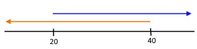

Previously: If-Else Statements
Up Next: Complex Conditional Statements
Until now our conditional statements have only checked one condition (e.g., Is the animal a llama? Is the temperature greater than 50? Did the fish get caught from north port?). However, we often care about multiple conditions (e.g., Is the animal a llama or an alpaca? Is the temperature between 50 and 80?, Did the fish get caught from north port or south port?).
Multiple conditions in English are almost always denoted by the words and and or. In R, there are operators that represent and and or called logical operators. and is represent by && while or is represented by ||.
| Operator Type | Purpose | R Symbols |
| Assignment | Assign a value to a variable | = or <- |
| Mathematical | Perform a mathematical operation on a numeric value | +, -, *, /, ^ |
| Conditional |
Compare two values | ==, !=, >, <, >=, <= |
| Logical | Combine conditions | &&, ||, &, | |
Extension: The single character logical operators & and |
A couple of lesson ago we asked the user for their favorite cheese and, of course, the answer is "Muenster". However, "Muenster" is not the easiest word to spell -- for example, it is often misspelled "Meunster". We can make our script more robust by using logical operators to check for alternative spellings (e.g., multiple conditions).
Instead of asking: Is favCheese equal to "Muenster"?
We want to ask: Is favCheese equal to "Muenster" or "Meunster"?
But in programming, we need to be more explicit and ask:
Is favCheese equal to "Muenster" or is favCheese equal to "Meunster"?
In R this is written as:
We can put the above favCheese conditions into one conditional statement by using the or operator. The symbol for the or operator is ( || ). Extension: || on the keyboard. The or operator takes two conditions and returns TRUE if either condition is TRUE and returns FALSE only if both conditions are FALSE.
The above code will execute the "culinary genius" codeblock if the user entered either spelling of "Muenster".
Note: If there are multiple conditions then each condition must be explicitly stated. R will faithfully execute the following code but the result will be TRUE no matter what the user enters.
We talk more about this issue here-- Trap: All conditional statements must be explicitly stated
We can use the ( || ) to check for more variations of "Muenster". The conditional statement in the script below checks six variations of "Muenster" and returns TRUE if favCheese matches any of the six spellings.
Note: the conditional statement have been broken up into multiple line to make it easier to read.

The ( || ) operator can also be used to check for different numeric value. For example if you want to output a message for anyone who is 18, 19, or 20 years old you can check the three conditions: (yourAge == 18) or (yourAge == 19) or (yourAge == 20).
The conditional statement is only going to be TRUE for the integers 18, 19, and 20. It will be FALSE for all other value, including decimal values like 18.5 or 20.1.

This coding is unwieldy if you have a larger range of numbers. For example "all ages between 20 and 40" would require 21 conditions:
And you would need an infinite number of conditions if you want to include all decimal numbers in between 20 and 40.
We need to create a conditional statement that looks at a range of numbers (20 through 40) -- this is done with two conditions connected using the and operator ( && ).
The picture (Fig) shows the overlap between two conditions that make up "all ages between 20 and 40":

The overlap between the two arrows represents when the conditions (yourAge > 20) and (yourAge < 40) are both TRUE.
In R the statement is:
And putting the above conditional statement into a script:

Where or ( || ) outputs TRUE if either of the conditions are TRUE, and ( && ) outputs TRUE only if both the conditions are TRUE.
The and ( && ) operator can also be used to make conditional operations on multiple variables. For instance you might want to look for people who like llamas ( favAnimal == "Llama" ) and like Muenster cheese ( favCheese == "Muenster" ):
or you might want all fish under the age of 5 ( fishAge < 5 ) that were caught at night ( catchTime == "night" ):
Or, you might want a simple check of both day and weather:

The above script (fig) has two variables ( day and weather ) and each variable has two possible values ( weekday,weekend & sunny,rainy ).
This means there are four possible combinations of day and weather:
We can use an if-else-if structure to handle the four possible day/weather conditions and provide a different response for each of the four possibilities:

In the previous script (fig), the four possible combinations of day and weather are presented in the if-else-if structure and the script outputs a message for all four conditions. However, there is no message if all four conditions fails. In other words, we have no error condition.
To add an error condition, we attach an else statement at the end of the if-else-if structure. The else statement is a waste-basket condition that captures anything the if-else-if structure missed.
So, we can take the above day/weather example and add an else as an error condition to capture every other possible input from the user:

It is good programming practice in an if-else-if structure to create an error statement (fig) that executes when all other conditions are checked and returns FALSE.
A) Have a user enter values for:
1) The age of a fish
2) The weight of the fish
3) The location that the fish was caught (north or south)
4) The gender of the fish
B) Give a message if the fish is between 5 and 8 years old.
C) Give a message if the fish weighs between 50 and 150 grams.
D) Give a message for each of the four possible gender/port conditions (male & female, north and south) and add an error case for values that don't match any of the conditions.
E) Challenge: Give a message if the fish weighs between 20 and 100 grams and comes from either the north or south port.
The or symbol ( || ) is made up of two "pipe characters" ( | ). On most keyboards, the pipe character ( | ) is on the same key as the backslash ( \ ) and right above the Enter (Fig). Sometimes the pipe symbol will be broken like this: ¦

When we are verbalizing conditional statements we often skip variable names if they have already been used for instance:
Because of this, it is intuitive to make the corresponding conditional statements:
But in scripting every conditional statement must be explicit -- in other words all conditions need a variable and a value. In English this would be:
And in script these conditional statements are:
The following statements:
Are effectively making the statements:
if("alpaca") will cause an error because string values cannot be translated by R into a logical value (i.e., TRUE or FALSE)
However, R can translate all numeric values into a logical value. In fact, all numeric values except 0, get translated to TRUE and 0 gets translated as FALSE.
So, 3, when used in a conditional statement is TRUE, meaning if(fishAge == 2 || 3) is TRUE no matter what the value of fishAge is.
You will often see the operators & and | used in place of && and ||. For all the examples we have done so far, the single logical operators (&, |) are functionally equivalent to the double logical operators (&&, ||). This is because we have only looked at variables with one value. The functionality between the single and double logical operator change when we start dealing with variables that have multiple values (called vectors). We will talk more about this when we introduce vectors. Essentially, single logical operators look at individual values in vectors whereas double operators look at the whole vector.